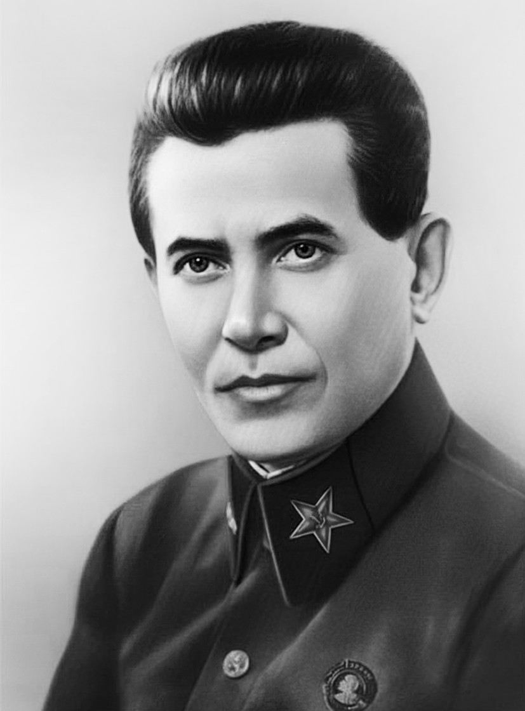

Ежов Н.И.
Ежов Николай Иванович
Советский партийный и государственный деятель, народный комиссар внутренних дел СССР (1936—1938), генеральный комиссар госбезопасности (с 1937 г., 24 января 1941 г. лишён звания), организатор и исполнитель политических репрессий (1937—1938)
19.04. 1895 – 4.02. 1940
Сведения о рождении его противоречивы: сам Ежов указывал что родился в Санкт-Петербурге, однако есть сведения, что он родился в селе Вейверы Мариампольского уезда. По официальной версии, с 1911 г. Николай Ежов работал учеником слесаря на Путиловском заводе, однако архивными документами это не подтверждается. В 1913 г. он уехал из Петербурга и провёл какое-то время у родителей, в Сувалкской губернии, а затем в поисках работы жил в других местах, и даже за границей, в Тильзите. В июне 1915 г. пошел добровольцем в армию. Вступил в партию большевиком в 1917 г. В апреле 1919 г. был призван на службу в Красную Армию. С октября 1919 по апрель 1921 г. — комиссар ряда красноармейских частей. С 1921 г. — на партийной работе. В феврале 1927 г. И.М. Москвин пригласил Ежова к себе в отдел инструктором. Проработав в Орграспредотделе до 1929 г., Ежов в течение года был заместителем наркома земледелия СССР, а в ноябре 1930 г. вернулся в Орграспредотдел уже заведующим, заняв место своего бывшего начальника, которого перевели на должность заместителя председателя ВСНХ. Именно к ноябрю 1930 г. относится знакомство Ежова со Сталиным.
Орграспредотделом Ежов заведует до 1934 г., реализуя на практике кадровую политику Сталина. В 1933—1934 гг. входит в Центральную комиссию ВКП(б) по чистке партии. На состоявшемся в январе-феврале 1934 г. XVII съезде партии Ежов возглавил мандатную комиссию. В феврале 1934 года избран членом ЦК, Оргбюро ЦК и заместителем председателя Комиссии партийного контроля при ЦК ВКП(б). С февраля 1935 г. — председатель КПК, секретарь ЦК ВКП(б).
В 1934—1935 гг. возглавляет промышленный отдел ЦК ВКП(б), в 1935—1936 гг. — отдел руководящих партийных органов ЦК ВКП(б). С 12 октября 1937 г. — кандидат в члены Политбюро ВКП(б).
26 сентября 1936 г. назначен Народным комиссаром внутренних дел СССР, сменив на этом посту Г. Г. Ягоду. В июле 1937 г. Ежов был награждён орденом Ленина «за выдающиеся успехи в деле руководства органами НКВД по выполнению правительственных заданий». На новом посту Ежов занимался координацией и осуществлением репрессий против лиц, подозревавшихся в антисоветской деятельности, шпионаже, «чистками» в партии, массовыми арестами и высылками по социальному, организационному, а затем и национальному признаку. Систематический характер эти кампании приняли с лета 1937 г., им предшествовали подготовительные репрессии в самих органах госбезопасности, которые «чистили» от сотрудников Ягоды. По видимости, к середине 1938 г. Ежов выполнил свою миссию (согласно другой версии, в вину ему были поставлены серьёзные перегибы в осуществлении репрессий, провалы в кадровой работе и, как в случае с Ягодой, то, что Ежов оказался вовлечённым в политические авантюры). 8 апреля 1938 г. он был назначен по совместительству наркомом водного транспорта, что уже могло свидетельствовать о грозящей ему опале. После того, как 19 ноября 1938 г. в Политбюро обсуждался донос на Ежова, поданный начальником управления НКВД по Ивановской области Журавлёвым, 23 ноября Ежов написал в Политбюро и лично Сталину прошение об отставке. В прошении Ежов брал на себя ответственность за вредительскую деятельность различных «врагов народа», проникших по недосмотру в НКВД и прокуратуру, а также за бегство ряда разведчиков и просто сотрудников НКВД за границу.
10 апреля 1939 г. Ежов был арестован. Содержался в Сухановской особой тюрьме НКВД СССР. Был обвинен в мужеложстве, в попытке государственного переворота, и организации убийства своей жены и расстрелян 4 февраля 1940 г. В 1998 г. Военная коллегия Верховного Суда Российской Федерации признала Н.И. Ежова не подлежащим реабилитации.
Год, на всём протяжении которого Ежов находился в должности главы НКВД, — 1937 — стал символическим обозначением репрессий. Сам этот период в народе впоследствии прозвали ежовщиной.
| Егоров А.И.< Prev | Next >Енукидзе А.С. |
|---|